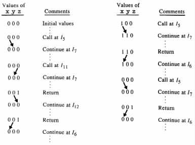

The task of programming is in many cases easier when recursion is allowed. However, although recursion does not in general increase the set of functions that the programs can compute, in the specific case of finite-domain programs such an increase is achieved.
Here recursion is introduced to programs by
procedure <procedure name> (<list of formal parameters>)
<procedure body>
end |
call <procedure name>(<list of actual parameters>) |
return |
Finite-domain programs that allow recursion are called recursive finite-domain programs.
An execution of a call instruction activates the execution of the procedure that is invoked. The activation consists of copying the values from the variables in the list of actual parameters to the corresponding variables in the list of formal parameters, and of transferring the control to the first instruction in the body of the procedure.
An execution of a return instruction causes the deactivation of the last of those activations of the procedures that are still in effect. The deactivation causes the transfer of control to the instruction immediately following the call instruction that was responsible for this last activation. Upon the transfer of control, the values from the variables in the list of formal parameters are copied to the corresponding variables in the list of actual parameters. In addition, the variables that do not appear in the list of actual parameters are restored to their values just as before the call instruction was executed.
All the variables of a program are assumed to be recognized throughout the full scope of the program, and each of them is allowed to appear in an arbitrary number of lists of formal and actual variables.
Any attempt to enter or leave a procedure without using a call instruction or a return instruction, respectively, causes the program to abort execution in a rejecting configuration.
In what follows, each call instruction and each return instruction is considered to be an instruction segment.
Example 3.1.1 Let P be the recursive finite-domain program in Figure 3.1.1. The variables are assumed to have the domain {0, 1}, with 0 as initial value. The program P accepts exactly those inputs in which the number of 0's is equal to the number of 1's. On each such input the program outputs those input values that are preceded by the same number of 0's as 1's.
On input 00111001 the program starts by reading the first input value 0 in I3, writing 0 in I4, and transferring the control to RP in I5. Upon entering RP x = y = z = 0. In RP the program uses instruction segment I8 to read the second input value 0, and then it calls RP recursively in I11.
The embedded activation of RP reads the first 1 in the input and then executes the return instruction, to resume in I12 with x = y = z = 0 the execution of the first activation of RP. The procedure continues by reading the second 1 of the input into z, and then returns to resume the execution of the main program in I6 with x = y = z = 0. The main program reads 1 into x, prints out that value, and invokes RP.
Upon entering RP x = y = 1 and z = 0. The procedure reads 0 and then returns the control to the main program. The main program reads into x the last 0 of the input, prints the value out, and calls RP again. RP reads the last input value and returns the control to the main program, where the computation is terminated at I2.
The table in Figure 3.1.2 shows the flow of data upon the activation and deactivation of
RP. 
|

|
The definition given here for recursion is not standard, but can be shown to be equivalent to standard definitions. The sole motivation for choosing the nonstandard definition is because it simplifies the notion of states of recursive programs. The convention that the variables of a program are recognizable throughout the full scope of the program is introduced to allow uniformity in the definition of states. The convention -- that upon the execution of a return instruction the variables that do not appear in the list of actual parameters are restored to their values just before the execution of the corresponding call instructions -- is introduced to show a resemblance to the notion of local variables in procedures.
Example 3.1.2
The recursive finite-domain program in Figure 3.1.3 computes the relation { (wwrev, w) | w is
a string of even length in {0, 1}* }. The domain of the variables is assumed to equal
{0, 1}, with 0 as initial value. On input 00111100 the program has a unique computation
that gives the output 0011. The program makes five calls to the procedure RP
while reading 0011. Then it proceeds with five returns while reading 1100.
It turns out that an approach similar to the one used for studying finite-memory programs can also be used for studying recursive finite-domain programs. The main difference between the two cases is in the complexity of the argumentation.
Moreover, as in the case of finite-memory programs, it should be emphasized here that recursive finite-domain programs are important not only as a vehicle for investigating the general class of programs but also on their own merits. For instance, in many compilers the syntax analyzers are basically designed as recursive finite-domain programs. (The central task of a syntax analyzer is to group together, according to some grammatical rules, the tokens in the program that is compiled. Such a grouping enables the compiler to detect the structure of the program, and therefore to generate the object code.)
 y then /* I9 */
return /* I10 */
call RP(z) /* I11 */
until false /* I12 */
end
y then /* I9 */
return /* I10 */
call RP(z) /* I11 */
until false /* I12 */
end  x then reject
return
end
x then reject
return
end